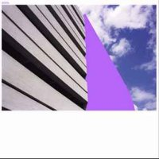

|  | |
| title | warp 10+3 remixes |
| label | warp |
| catalog | warpcd69, warplp69 |
| country | uk |
| date | 11 October 1999 |
| format | cd, 3xLP |
| tracks | pram
remix of lfo/aphex twin - simon from sydney/yellow calx (??)
luke vibert remix of dj minks - hey hey can u relate (??) stereolab remix of boards of canada - kid for today (??) isan remix of seefeel - when face was face (??) andy votel remix of broadcast - booklovers (??) four tet remix of aphex twin - untitled SAW2 track1 (??) ellis island sound remix of two lone swordsmen - spine bubbles (??) winston and ross remix of sweet exorcist - testone (??) autechre remix of nightmares on wax - sal batardes (??) john mcentire remix of nightmares on wax - playtime (??) underdog remix of broadcast - hammer without a master (??) bogdan remix of autechre - ep7 / envane (??) mogwai remix of link - arcadian (??) plaid remix of autechre - vletrmx (??) red snapper remix of sabres of paradise - wilmot (??) surgeon remix of lfo - nurture (??) wunder remix of mike ink - polka trax 3 (??) labradford remix of lfo - freeze (??) oval remix of squarepusher - big loada (??) push button objects remix of boards of canada - an eagle in your mind (??) richard devine remix of aphex twin - come to daddy (??) mira calix remix of seefeel - air eyes (??) to rococo rot remix of mira calix - sandsings (??) jimi tenor remix of sweet exorcist - mad jack (??) plone remix of tricky disco - tricky disco (??) jim o'rourke remix of autechre - characi (??) spiritualised remix of lfo - tied up (??) |